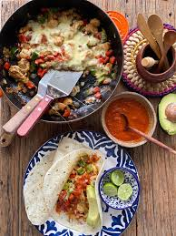
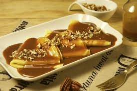

TOPOS
- Estaremos todos de acuerdo si os digo que seguramente uno de los platos más frecuentados en los restaurantes mexicanos son los totopos, o más comunmente conocidos como nachos después de que los americanos lo trajesen a los Estados Unidos. Sin embargo, su verdaderos origen viene de México, donde se piden de todos los estilos, ya sean al pastor con guacamole y pico de gallo o con picadillo de carne y queso fundido. Los totopos en sí, se hacen friendo piezas de maíz en aceite caliente.
.png)
TACOS
- El siguiente plato del que os voy a hablar son los tacos,posiblemente el plato más famoso de este apartado. Tratan de una tortilla de maiz o trigo la cual se enrolla con diversos ingredientes y con algún tipo de salsa. Estos ingredientes suelen ser generalmente carne de ternera, langostinos, pollo... y después se le añade guacamole, pico de gallo o salsas picantes como el chipotle.
.png)
ENCHILADA
- En tercer lugar, tenemos a las conocidas enchiladas. Consisten en varias tortillas enrolladas y posterirormente bañadas en alguna salsa piocante, y cuando digo picante es MUY PICANTE. Normalmente suele ser una mezcla de jitomate con algún chile seco como el ancho o el guajillo. Tuvieron su origen en las civilizaciones precolombianas.
.png)
ALAMBRES
- El siguiente plato de la lista son los alambres,un plato combinado que da elección al consumidor entre múltiples ingredientes para echar en su tortilla. Normalmente suele ser pollo, ternera, pico de gallo,cochinita, judías...etc.

CREPAS
- Para el último plato de la sección mexicana he decidido escoger un postre, en este caso las crepas. Las crepas reciben su nombre de la palabra "crep",en las que se realizan unas msas de trigo en forma de disco a las que después de les agrega chocolate o dulce de leche.
